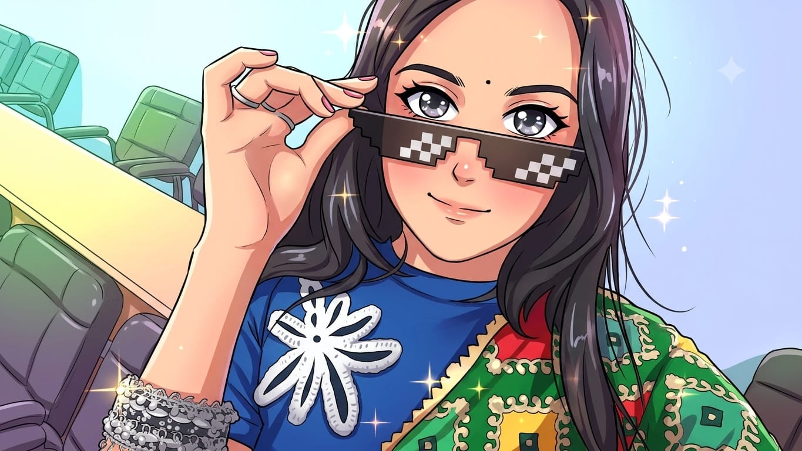
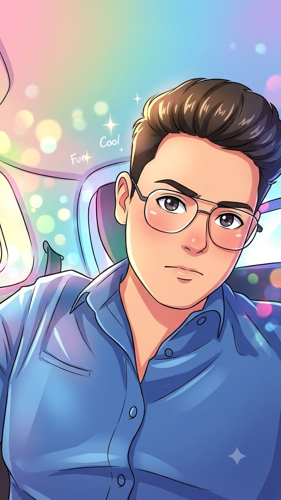

01
ROLE / DESIGNNancy
Shapes the visual identity and brings the details to life.
FILE OPENED / 06 — THE HUMANS
A tiny internet universe, built by people who definitely have too many tabs open.
TEAM / WEB WEAVERS credits.exe / team directoryTEAM: WEB WEAVERS BUILD: CULTURE.EXE STATUS: MOSTLY STABLE COFFEE: CRITICAL TABS OPEN: TOO MANY MISSION: MAKE THE INTERNET FEEL HUMAN
THE PEOPLE BEHIND THE PIXELS
The people behind the design, stories and launch of culture.exe.
Shapes the visual identity and brings the details to life.

02Creates the stories and words that give the site its voice.

03Gets culture.exe ready to launch and out into the world.
BUG REPORT / LOVE LETTER / IDEAS
Front-end demo only. The form shows a local confirmation; it does not send or store data.